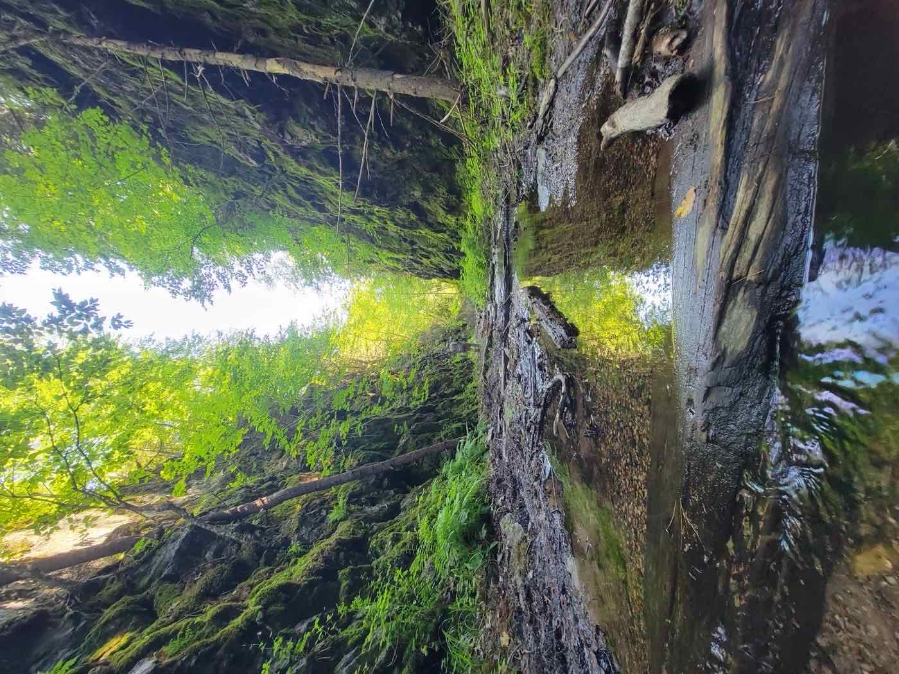

Strange and Unknown Things in Michigan's Upper Peninsula
Haunted cemeteries, floating orbs of light, Sasquatch, singing sands, and even Jimmy Hoffa all have ties to the U.P.!
The Haunted Kitchie Cemetery
The Kitchie Cemetery is about 9 miles east of Two Rivers Motel and Cabins just off of M-28. The welcome sign indicates the very small cemetery was established in 1889, but the most recent date found on a gravestone is 1901. It has only 19 marked graves—11 of them children under the age of eight (no one here died of old age). There are several children of soldiers buried here. Of the 19 marked graves, one is unknown and the other 18 have 18 different surnames, none of which is Kitchie.
While there are plenty of rumors as to why it is here, we have yet to hear a solid explanation. Is it an old family graveyard? Is it all that's left of a town named Kitchie that no longer exists? A children's graveyard?
People have reported many different strange things here — disembodied screams that come from nowhere, the sound of chainsaws, and floating orbs that come out of the woods and surround vehicles when visiting the graveyard. The only reported ghost activity in the cemetery is an unknown woman who can be seen crying near the children's graves in the back left corner. There have also been reports of the sound of horses walking down the road leading to the cemetery.
The Paulding Light
Also known as Dogs Meadow Light, the Paulding Light is about 25 miles south and west of Two Rivers Motel and Cabins, just off US-45 on Robbins Pond Road, and is considered an Upper Peninsula mystery by many locals. The first recorded sighting was in 1966 when a group of teenagers reported the light to a local sheriff. Hundreds of locals and tourists claim to have seen the light, which varies from white to red to green to blue.
Although stories vary, the most popular legend involves the death of a railroad brakeman — the light said to be his lantern, killed while attempting to stop an oncoming train from colliding with railway cars stopped on the tracks. Another story claims the light is the ghost of a slain mail courier, while another says it is the ghost of an Indian dancing on the power lines that run through the valley.
Several investigations suggest the light is due to car headlights on a stretch of US-45 about five miles north of the observation area — but locals who've seen the light describe it coming right up to them and swirling around, which headlights alone don't explain.
The “Rock Cut” or the “Million Dollar Railroad”
Very close to Mount Arvon, in the forests of the Huron Mountains, there is a huge 1,000-foot gash in the solid rock. It was created in the 1890s to run the Iron Range and Huron Bay Railroad from Champion to an ore dock near Skanee. A group of investors in the Detroit area spent about $2 million and employed 1,500 men building a railroad and ore dock — dynamiting an almost-impenetrable wall of rock, with workers carrying away the debris in wheelbarrows.
Around 1893, this slab of the Iron Range & Huron Bay Railroad was finally completed, much to the relief of the men. However, their relief turned to dismay when they learned the Champion Mine stopped producing ore. Local legend says the locomotive made it downhill to the bay, returned, and could not climb the steep 8% grade near the Rock Cut; other sources say the trains never even ran at all — a failed venture that went bankrupt after four years and $2 million spent. Shortly after, the railroad was sold for about $100,000 and the tracks were removed and used downstate.
It is not an easy feat to find the Rock Cut, and it is not recommended to visit in the spring, as it will be too wet and muddy from the snow melt. Coordinates: 46.73186681031113, -88.17414289753174

The Singing Sands of Bete Grise
About 115 miles away is the singing sands of Bete Grise beach! If you are headed up to Copper Harbor, this might make your list of places to stop. When you press down with the palm of your hand on the sand, it actually makes a singing sound, and striking it quickly makes a barking sound. If the sand is removed from the beach to another location, the phenomenon can't be replicated. It's said the sound is the voice of a Native American maid crying out to her lost lover who died at sea in Lake Superior. Scientists say the sand sings when perfect conditions are met—grain size, humidity, and sand makeup—though they don't completely understand what creates the phenomenon.
Jimmy Hoffa
Did you know that Jimmy Hoffa had a vacation home about 10 miles south of Two Rivers Motel and Cabins? Tepee Lake is just south of Kenton off of FFH16, and Jimmy Hoffa used to have a vacation home there—still owned by the Hoffa family! Some of the locals can tell you stories about when he would come and vacation here. After Jimmy disappeared, the FBI searched the Tepee Lake area to see if any clues could be found as to his whereabouts.
Sasquatch
Whether you believe in Sasquatch (Bigfoot) or not, quite a few people in the U.P. consider them a true Michigan legend, and have reported hearing their calls, seeing structures they built, and even claim to have caught them on trail cams. Our advice—just keep your eyes open and your camera ready. Whether you catch a moose or a Bigfoot, either will be a great tale to tell.
Ready to See the U.P. for Yourself?
We've got cozy lodging and are centrally located in the Ottawa National Forest for tons of U.P. fun.